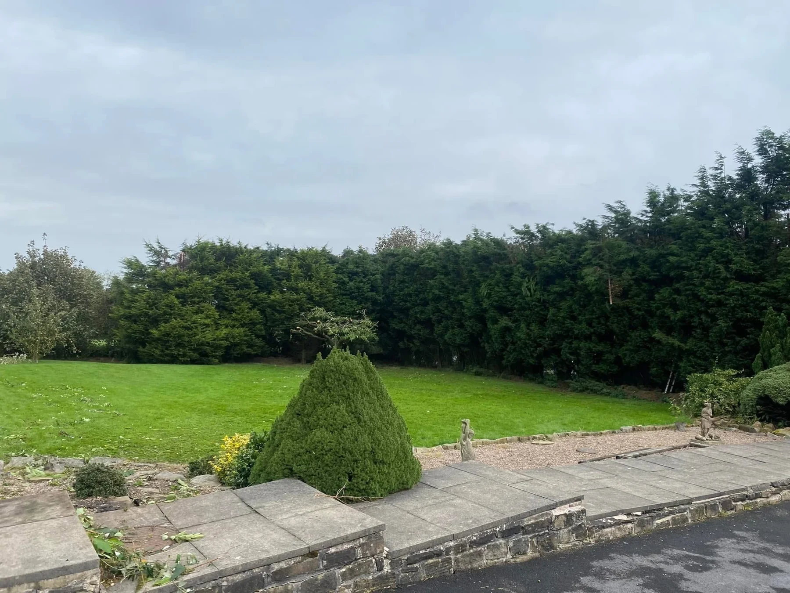
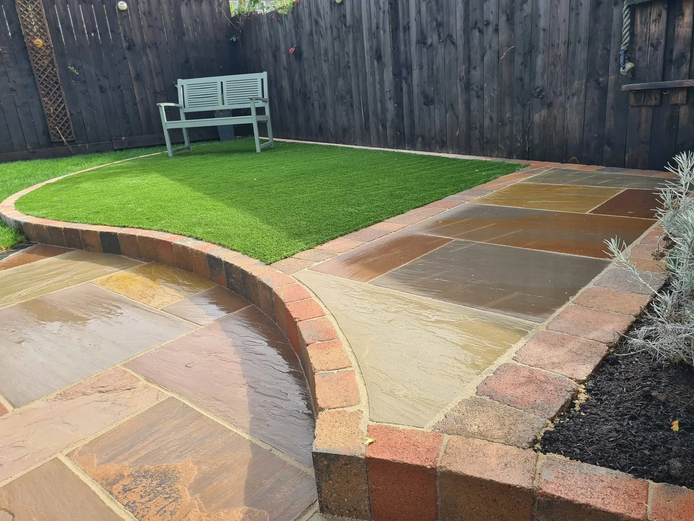
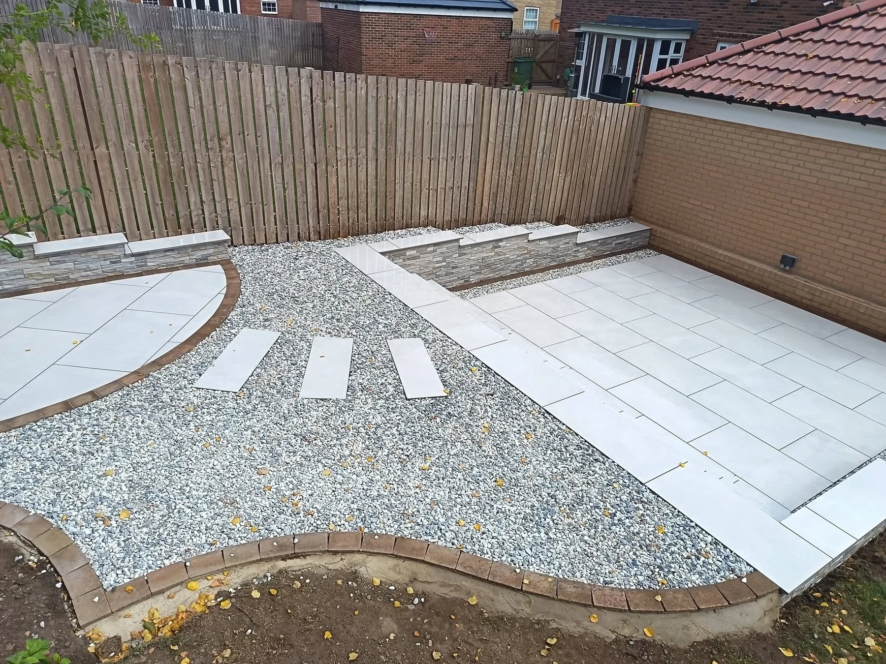
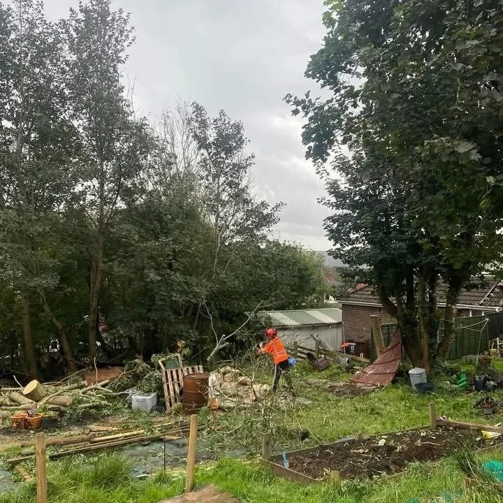
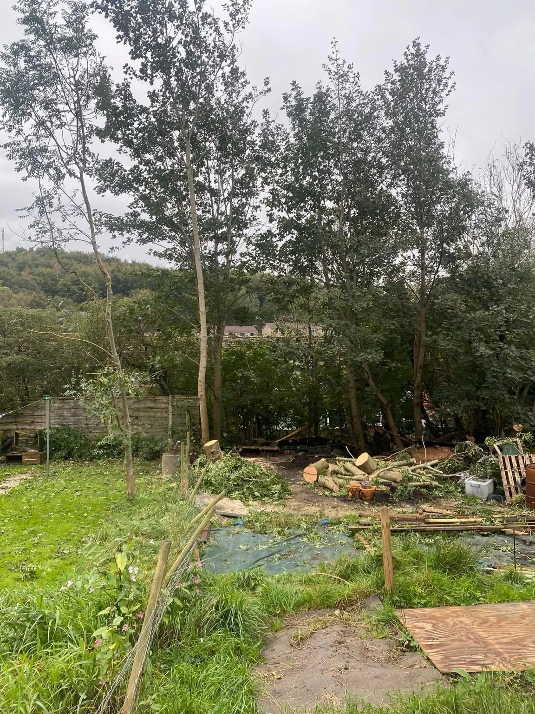

TREES · PAVING · OUTDOOR SPACES
One garden. More possibilities.
A clearer tree line, a welcoming driveway or a patio made for slower afternoons. Start with the part of your outdoor space you want to improve.
South Coast Tree & Landscapes serves Chandlers Ford, Southampton and surrounding areas, taking enquiries for tree surgery, driveways, patios and landscaping.
Tell us about your project →

TREE SURGERY
Room for a fresh start.
Need to discuss tree work or an overgrown space? Send photographs of the trees, nearby buildings and access so the work can be assessed.
Tell us what you want to keep and what needs attention. The approach and scope can then be discussed before work is arranged.
Explore tree services →
Illustrative service photographOUTDOOR IDEAS
Find your next step.
From green spaces to paved surfaces, explore the possibilities. Illustrative photographs of tree work, paving and garden spaces.

SOUTH COAST TREE & LANDSCAPES
Your ideas.
A clear next step.
Whether you are considering tree surgery or a change to your garden layout, start with a conversation about the space and how you want to use it.
Send a few clear photographs, your postcode and approximate dimensions.
Tell us what needs doing, your priorities and any access restrictions.
Discuss the work, quotation and availability before making a booking.
CLOSE TO HOME
Chandlers Ford & Southampton.
Serving Chandlers Ford, Southampton and surrounding areas. Include your postcode so coverage and access can be confirmed for your enquiry.
LET’S GET STARTED
What do you have in mind?
Choose your service and tell us about the job. Your enquiry opens in WhatsApp, ready for you to review and send. You can add photographs there.
For tree work, include the location of the trees and nearby structures. For paving, include the approximate area and existing surface.
Your details are only shared when you send the message. Privacy information.GOOD TO KNOW
A few answers.
Which services do you offer?
Tree surgery, driveways, patios and landscaping. Choose a service in the enquiry form, or select multiple services if your project involves several areas.
Which areas do you cover?
Chandlers Ford, Southampton and surrounding areas. Send your postcode to confirm coverage and availability.
What should I send for a quote?
Clear photographs, approximate measurements, your postcode and a description of the work. Include any access restrictions.
Can I discuss a whole garden project?
Yes. Tell us which parts of your garden you want to change and how you would like to use the space.
What if a tree is protected?
Mention any known tree protection or conservation-area restrictions when you enquire. Required permissions must be established before affected work is arranged.
How do I get in touch?
Call 07535 124066 or use the WhatsApp form. You can review the prepared message before sending it.
SOUTH COAST TREE & LANDSCAPES
Let’s talk about your space.
Call us or share your plans and photos on WhatsApp.